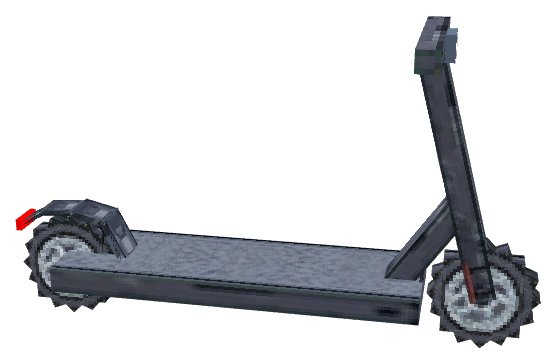
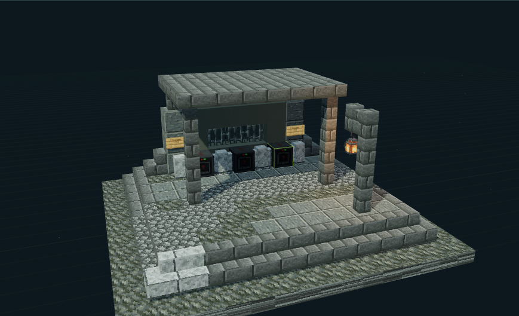
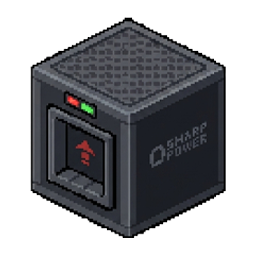

ЭЛЕКТРОПРИВОД / ПЯТЬ МЕСТ
ЭЛЕКТРОСАМОКАТ
Водитель и четыре пассажира. Масса экипажа влияет на разгон, торможение и скорость на спуске.
Зарядная станция ↓
SCOOTER / ORIGINAL MODELМЕСТ
ЗАЕЗД
ДИНАМИКА ДВИЖЕНИЯ
Испытательный заезд
Рельеф, покрытие и пассажиры меняют поведение самоката. Показания приборов связаны с поездкой.
ПО РОВНОЙ
На ровной — до 80. Сними палец с газа: инерция никуда не делась.
Четыре пассажира
Места 02–05 свободны.
Водитель уже на борту.
Это небольшой заезд по правилам мода, не полный Minecraft: без столкновений и разрушения блоков. Показания HUD, масса, разгон, накат, расход и покрытия связаны друг с другом. Можешь рулить A/D, когда дорога в фокусе.
СТАНЦИЯ
СТРУКТУРА ИЗ МОДА
Зарядная станция
Оригинальная структура: 198 блоков, три зарядных порта, две настенные таблички и подвесной фонарь.

3D недоступно. Выбери один из трёх портов на терминале — зарядка всё равно работает.
Потяни для обзора · колесо — приблизить · клик по порту — выбрать

ПОРТ 01ДЛЯ ЭЛЕКТРОСАМОКАТАПроедь немного, а потом припаркуйся у порта.
В игре порт ищет самокат совсем рядом: до двух блоков по горизонтали и одного по высоте. Зарядка не чинит прочность. Вода снижает прочность независимо от уровня заряда.
УСТРОЙСТВО И УПРАВЛЕНИЕ
Механика самоката
Скорость и масса на спуске
Ограничение ровной дороги не работает на спуске. Тяжёлые пассажиры замедляют обычный разгон и торможение, зато усиливают накат с горы. Выбери спуск и отпусти газ — гравитация продолжит работу.
Порог достижения «320 км/ч peek»
Так называется достижение в моде. Его реальный порог — 99,5 на HUD, то есть примерно 100. Догонять 320 для награды не нужно.
Покрытия и износ
Мёд умножает скорость на 0,55, сено — на 0,75. Вода гасит ход и отнимает по единице прочности каждые пять игровых тиков. На стенде эти эффекты действуют, пока выбрано покрытие. Прочность — 500, отдельно от заряда.
Управление и взаимодействия
WASD — движение, Shift — слезть; можно посадить четырёх пассажиров. В мире самокат также реагирует на столкновения, мягкие блоки и слизь. Этот заезд намеренно не изображает эти сложные взаимодействия.
03 / ПРОГРЕСС